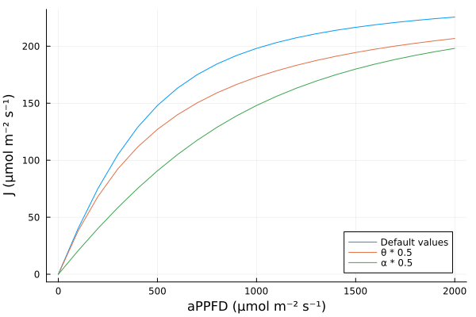

Photosynthesis
The photosynthesis is, in this package, the process of assimilation of the atmospheric CO₂.
Models overview
Several models are available to simulate it:
Fvcb: an implementation of the Farquhar–von Caemmerer–Berry (FvCB) model for C3 photosynthesis (Farquhar et al., 1980; von Caemmerer and Farquhar, 1981) using an analytical resolutionFvcbIter: the same model but implemented using an iterative computation over CᵢFvcbRaw: the same model but without the coupling with the stomatal conductance, i.e. as presented in the original paper. This version needs Cᵢ as input.ConstantA: a model to set the assimilation to a constant value (mainly for testing)ConstantAGs: a model to set the assimilation to a constant value, but coupled to a stomatal conductance model to compute Cᵢ (mainly for testing)
You can choose which model to use by passing a component with an assimilation model set to one of the struct above.
For example, you can "simulate" a constant assimilation for a leaf using the following:
using PlantBiophysics, PlantSimEngine
leaf = ModelList(ConstantA(25.0))
run!(leaf)TimeStepTable{Status{(:A,), Tuple{Base.RefV...}(1 x 1):
╭─────┬─────────╮
│ Row │ A │
│ │ Float64 │
├─────┼─────────┤
│ 1 │ 25.0 │
╰─────┴─────────╯
This model does one thing only: force the photosynthesis to the value given as a parameter in the model, here 25.0 $μmol \cdot m^{-2} \cdot s^{-1}$.
This model feels useless here, but it can be useful when coupled with other models, for example when simulating the full energy balance with a coupled photosynthesis and stomatal conductance model. In this case it is used to better understand how the energy balance works for a given assimilation.
Fvcb
Parameters
The FvCB model has a lot of parameters:
Tᵣ: reference temperature (°C) at which other parameters were measuredVcMaxRef: maximum rate of Rubisco activity ($μmol \cdot m^{-2} \cdot s^{-1}$)JMaxRef: potential rate of electron transport ($μmol \cdot m^{-2} \cdot s^{-1}$)RdRef: mitochondrial respiration in the light at reference temperature ($μmol \cdot m^{-2} \cdot s^{-1}$)TPURef: triose phosphate utilization-limited photosynthesis rate ($μmol \cdot m^{-2} \cdot s^{-1}$)Eₐᵣ: activation energy ($J \cdot mol^{-1}$), or the exponential rate of rise for Rd.O₂: intercellular dioxygen concentration ($ppm$)Eₐⱼ: activation energy ($J \cdot mol^{-1}$), or the exponential rate of rise for JMax.Hdⱼ: rate of decrease of the function above the optimum (also called EDVJ) for JMax.Δₛⱼ: entropy factor for JMax.Eₐᵥ: activation energy ($J \cdot mol^{-1}$), or the exponential rate of rise for VcMax.Hdᵥ: rate of decrease of the function above the optimum (also called EDVC) for VcMax.Δₛᵥ: entropy factor for VcMax.α: quantum yield of electron transport ($mol_e \cdot mol^{-1}_{quanta}$). See also eq. 4 of Medlyn et al. (2002) and its implementation inget_Jθ: determines the curvature of the light response curve forJ~aPPFD. See also eq. 4 of Medlyn et al. (2002) and its implementation inget_J
The default values of the temperature correction parameters are taken from plantecophys (Duursma, 2015). If there is no negative effect of high temperatures on the reaction (Jmax or VcMax), then Δₛ can be set to 0.0.
The default value for θ is 0.7 according to Von Caemmerer (2000), but it can be modified to 0.9 as in Su et al. (2009). The larger it is, the lower the smoothing.
The default value for α is 0.24, taken from plantecophys.
Medlyn et al. (2002) found relatively low influence ("a slight effect") of α and θ. They also say that Kc, Ko and Γ* "are thought to be intrinsic properties of the Rubisco enzyme and are generally assumed constant among species".
Input variables
The Fvcb model needs three input variables:
inputs(Fvcb())(:aPPFD, :Tₗ, :Cₛ)The aPPFD is the absorbed photosynthetically active photon flux density ($μmol_{quanta} \cdot m^{-2} \cdot s^{-1}$). It is usually computed by a light interception model.
Tₗ is the leaf temperature in Celsius degree.
Cₛ (ppm) is the air CO₂ concentration at the leaf surface, usually computed using a boundary layer conductance model.
Example
Here is an example usage:
meteo = Atmosphere(T = 20.0, Wind = 1.0, P = 101.3, Rh = 0.65)
leaf = ModelList(
Fvcb(),
Medlyn(0.03, 12.0),
status = (Tₗ = 25.0, aPPFD = 1000.0, Cₛ = 400.0, Dₗ = meteo.VPD)
)
# NB: we need to initialize `Tₗ`, `aPPFD` and `Cₛ` for `FvCB`, and `Dₗ` for the stomatal conductance of Medlyn et al. (2011).
run!(leaf,meteo)
leafPlantSimEngine.DependencyGraph{Dict{Symbol, PlantSimEngine.SoftDependencyNode}, Any}(Dict{Symbol, PlantSimEngine.SoftDependencyNode}(:photosynthesis => Fvcb{Float64}
), Dict{Symbol, Any}())Status(aPPFD = 1000.0, Tₗ = 25.0, Cₛ = 400.0, A = -Inf, Gₛ = -Inf, Cᵢ = -Inf, Dₗ = 0.8214484239448965)You can use inputs to get the variables needed for a given model, e.g.: inputs(Fvcb()), inputs(Medlyn(0.03, 12.0)), or better: inputs(Fvcb(), Medlyn(0.03, 12.0))
FvcbIter
Parameters
FvcbIter needs the exact same parameter values as Fvcb.
Input variables
The only difference with Fvcb is that FvcbIter computes Cₛ, so we don't need it as input, but it needs Gbc instead, the boundary conductance for CO₂ ($mol \cdot m^{-2} \cdot s^{-1}$).
Example
Here is an example usage:
meteo = Atmosphere(T = 20.0, Wind = 1.0, P = 101.3, Rh = 0.65)
leaf = ModelList(
FvcbIter(),
Medlyn(0.03, 12.0),
status = (Tₗ = 25.0, aPPFD = 1000.0, Gbc = 0.67, Dₗ = meteo.VPD)
)
# NB: we need to initialize `Tₗ`, `aPPFD` and `Gbc` for `FvcbIter`, and `Dₗ` for the stomatal conductance of Medlyn et al. (2011).
run!(leaf,meteo,Constants())
leafPlantSimEngine.DependencyGraph{Dict{Symbol, PlantSimEngine.SoftDependencyNode}, Any}(Dict{Symbol, PlantSimEngine.SoftDependencyNode}(:photosynthesis => FvcbIter{Float64}
), Dict{Symbol, Any}())Status(aPPFD = 1000.0, Tₗ = 25.0, Gbc = 0.67, A = -Inf, Gₛ = -Inf, Cᵢ = -Inf, Cₛ = -Inf, Dₗ = 0.8214484239448965)FvcbRaw
Parameters
FvcbRaw needs again the exact same parameter values as Fvcb, and the same input variables.
Input variables
The FvcbRaw model needs three input variables:
inputs(FvcbRaw())(:aPPFD, :Tₗ, :Cᵢ)The aPPFD is, again, the absorbed photosynthetically active photon flux density ($μmol_{quanta} \cdot m^{-2} \cdot s^{-1}$). It is usually computed by a light interception model. Tₗ (°C) is the leaf temperature, and Cᵢ (ppm) is the intercellular CO₂ concentration, usually computed using a conductance model.
The three implementations of the FvCB model needs different input variables because they implement more or less coupling with other models.
Example
leaf = ModelList(
FvcbRaw(),
status = (Tₗ = 25.0, aPPFD = 1000.0, Cᵢ = 400.0)
)
# NB: we need `Tₗ`, `aPPFD` and `Cᵢ` as inputs (see `inputs`)
run!(leaf)
leafPlantSimEngine.DependencyGraph{Dict{Symbol, PlantSimEngine.SoftDependencyNode}, Any}(Dict{Symbol, PlantSimEngine.SoftDependencyNode}(:photosynthesis => FvcbRaw{Float64}
), Dict{Symbol, Any}())Status(aPPFD = 1000.0, Tₗ = 25.0, Cᵢ = 400.0, A = -Inf)ConstantA
Parameters
ConstantA has one parameter: the constant value for the assimilation (A, $μmol \cdot m^{-2} \cdot s^{-1}$). Its only job is to force the value of A to the value of the parameter.
Input variables
ConstantA doesn't need any input variable.
Example
leaf = ModelList(ConstantA())
run!(leaf)
leafPlantSimEngine.DependencyGraph{Dict{Symbol, PlantSimEngine.SoftDependencyNode}, Any}(Dict{Symbol, PlantSimEngine.SoftDependencyNode}(:photosynthesis => ConstantA{Float64}
), Dict{Symbol, Any}())Status(A = -Inf,)ConstantAGs
Parameters
ConstantAGs has one parameter: the constant value for the assimilation (A, $μmol \cdot m^{-2} \cdot s^{-1}$). Similarly to ConstantA, its job is to force the value of A to the value of the parameter, but this one adds a coupling with a stomatal conductance model to in fine compute Cᵢ (ppm), the intercellular CO₂ concentration.
Input variables
ConstantAGs needs Cₛ as input variable. Cₛ (ppm) is the air CO₂ concentration at the leaf surface, usually computed using a conductance model.
inputs(ConstantAGs())(:Cₛ,)Example
leaf = ModelList(
ConstantAGs(),
Medlyn(0.03, 12.0),
status = (Cₛ = 380.0, Dₗ = 2.0)
)
run!(leaf)
leafPlantSimEngine.DependencyGraph{Dict{Symbol, PlantSimEngine.SoftDependencyNode}, Any}(Dict{Symbol, PlantSimEngine.SoftDependencyNode}(:photosynthesis => ConstantAGs{Float64}
└─ Medlyn{Float64}
), Dict{Symbol, Any}())Status(Cₛ = 380.0, A = -Inf, Gₛ = -Inf, Cᵢ = -Inf, Dₗ = 2.0)Parameter effects
We can easily investigate the effects of parameters on the simulation. For example we can see what is the effect of aPPFD on J.
First we import the packages needed:
using Plots
using PlantBiophysics, PlantSimEngineThen we set up our models and their parameter values:
A = Fvcb(); aPPFD = 0:100:2000;0:100:2000And finally we plot J ~ aPPFD with different parameter values, with the simplification that JMax is equal to JMaxRef:
plot(x -> PlantBiophysics.get_J(x, A.JMaxRef, A.α, A.θ), aPPFD, xlabel = "aPPFD (μmol m⁻² s⁻¹)",
ylab = "J (μmol m⁻² s⁻¹)", label = "Default values", legend = :bottomright)
plot!(x -> PlantBiophysics.get_J(x, A.JMaxRef, A.α, A.θ * 0.5), aPPFD, label = "θ * 0.5")
plot!(x -> PlantBiophysics.get_J(x, A.JMaxRef, A.α * 0.5, A.θ), aPPFD, label = "α * 0.5")
You can investigate other relationships with different plots.
References
Caemmerer, S. von, et G. D. Farquhar. 1981. « Some Relationships between the Biochemistry of Photosynthesis and the Gas Exchange of Leaves ». Planta 153 (4): 376‑87. https://doi.org/10.1007/BF00384257.
Farquhar, G. D., S. von von Caemmerer, et J. A. Berry. 1980. « A biochemical model of photosynthetic CO2 assimilation in leaves of C3 species ». Planta 149 (1): 78‑90.
Medlyn, B. E., E. Dreyer, D. Ellsworth, M. Forstreuter, P. C. Harley, M. U. F. Kirschbaum, X. Le Roux, et al. 2002. « Temperature response of parameters of a biochemically based model of photosynthesis. II. A review of experimental data ». Plant, Cell & Environment 25 (9): 1167‑79. https://doi.org/10.1046/j.1365-3040.2002.00891.x.
Su, Y., Zhu, G., Miao, Z., Feng, Q. and Chang, Z. 2009. « Estimation of parameters of a biochemically based model of photosynthesis using a genetic algorithm ». Plant, Cell & Environment, 32: 1710-1723. https://doi.org/10.1111/j.1365-3040.2009.02036.x.
Von Caemmerer, Susanna. 2000. Biochemical models of leaf photosynthesis. Csiro publishing.
Duursma, R. A. 2015. « Plantecophys - An R Package for Analysing and Modelling Leaf Gas Exchange Data ». PLoS ONE 10(11): e0143346. https://doi:10.1371/journal.pone.0143346.